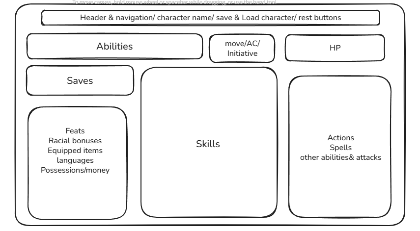

Hardy's 3.5 digital Character sheet
This website will help users make and store character sheets for Dungeons & Dragon's 3.5th edition.
Main: #444 | Accent: #D4AF37
Header Font: Aclonica
Body Font: 'Alike', serif
The following wireframe shows the layout of the character sheet page optimized for desktop users. It includes sections for abilities, saves, skills, combat, and equipment. This layout is inspired by how D&D Beyond structures their latest character sheets.
